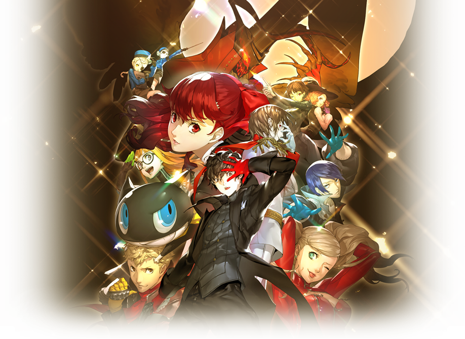
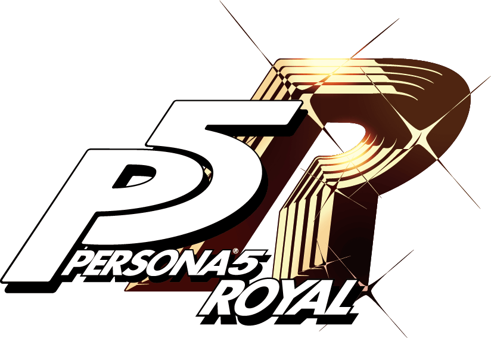
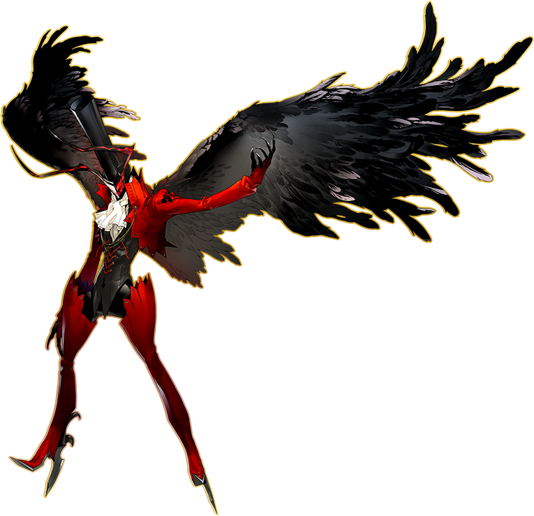
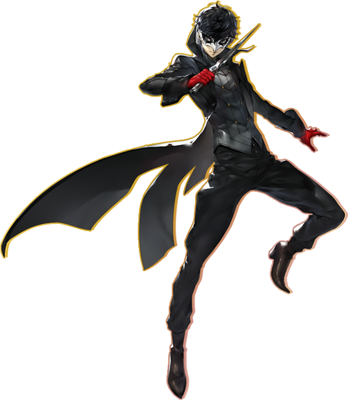
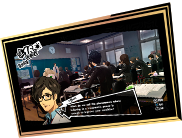
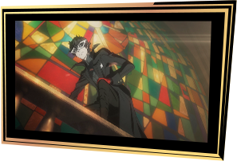

PHANTOM THIEF / JOKER
主人公
PROTAGONIST / CV 福山润
白天，是刚刚转学的高中生。夜晚，是潜入人心、夺取扭曲欲望的怪盗团团长。
PERSONAARSÈNE / 阿尔赛纳


▶WATCH THE OFFICIAL TRAILER 官方宣传片 · 点击在 YouTube 播放声音SCROLL ↓

PHANTOM THIEF / JOKER
PROTAGONIST / CV 福山润
白天，是刚刚转学的高中生。夜晚，是潜入人心、夺取扭曲欲望的怪盗团团长。

在东京度过学校生活，认识伙伴，发现属于自己的日常。

与怪盗团进入异世界，将扭曲欲望化为改变的契机。